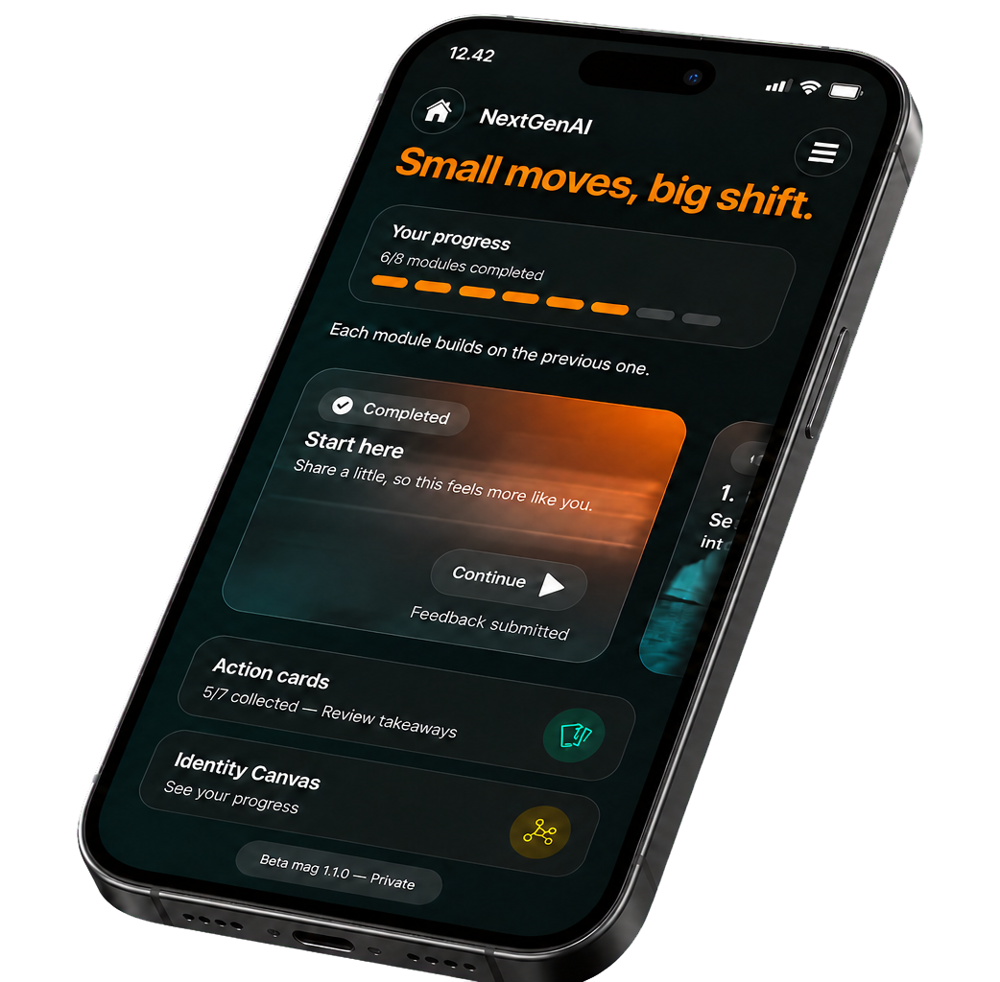

82
käyttäjää
Tukea nuorelle, tietoa Suomelle
Työllistyminen kertoo yhden hetken. First Five Years rakentaa näkymää työelämän ensimmäisiin vuosiin: missä nuoren yhteys työelämään vahvistuu, missä se alkaa horjua ja mitä sen taustalla tapahtuu.
01 Miksi
Oppilaitos näkee opiskelijan. Työnantaja näkee oman työntekijänsä. Rekisterit kertovat, onko ihminen töissä tai työtön.
Mutta kukaan ei näe kunnolla koko matkaa koulusta ensimmäisten työvuosien läpi. Emme siksi tiedä riittävän aikaisin, missä nuoren yhteys työelämään vahvistuu, missä se alkaa horjua ja miksi.
02 Mitä rakennamme
Tilastot kertovat, mitä tapahtui. Me haluamme ymmärtää myös miksi, ja aikaisemmin.
Rakennamme kestävän kiinnittymisen mittaria. Sen tarkoitus on auttaa näkemään, mitä työelämän ensimmäisinä vuosina tapahtuu ennen kuin vaikeudet näkyvät työttömyytenä, lähtemisenä tai osaamisen menetyksenä.
Mittarin pitäisi tehdä näkyväksi esimerkiksi se, pääseekö nuori käyttämään osaamistaan, kehittymään ja ottamaan vastuuta. Samalla voidaan nähdä, missä kohdissa ensimmäisten työvuosien rakenteet eivät kanna.
Mittari ei synny valmiina yhden pilotin perusteella. Määritelmät ja laskentatapa pitää arvioida avoimesti ja rakentaa yhdessä tutkimuksen kanssa.
Jos onnistumme, päätöksenteolla on nykyistä aikaisempi näkymä siihen, missä nuorten työelämään kiinnittyminen toimii ja missä tarvitaan uusia ratkaisuja.
03 Miten tieto syntyy
Nuori saa maksuttoman AI‑valmentajan työelämän ensimmäisiin vuosiin. Se on paikalla silloin, kun kysymys syntyy: suunnasta, työnhausta, vahvuuksista, palautteesta tai vaikeasta tilanteesta työpaikalla.
Yksittäinen keskustelu kuuluu käyttäjälle. Mutta kun samat kysymykset ja tilanteet alkavat toistua eri nuorten kokemuksissa, syntyy signaali ilmiöstä, jota voidaan tutkia laajemmin.
AI-valmentaja ei ole koko First Five Years. Se on yksi tapa yhdistää nuorelle syntyvä välitön hyöty ja Suomelta tällä hetkellä puuttuva tieto.

Tästä tieto alkaa: oikeista kysymyksistä oikeissa tilanteissa.
En tiedä, mihin suuntaan menen.
En tiedä, missä olen hyvä.
En tiedä, mitä teen seuraavaksi.
Yksi kysymys on henkilökohtainen. Kun sama kokemus alkaa toistua eri nuorten kohdalla, kannattaa kysyä myös, mitä ympäristössä tapahtuu.
04 Ensimmäinen pilotti
käyttäjää
valmennuskeskustelua
viestiä
Pilotti kesti helmikuusta maaliskuuhun 2026. Nuoret hakivat tukea omaan suuntaan, vahvuuksiin, kehitettäviin taitoihin, työnhakuun ja vaikeisiin tilanteisiin työpaikalla.
Keskusteluista tunnistettiin kymmenen toistuvaa mallia. Niitä yhdisti sama havainto: nuorella oli usein kyky tai halu toimia, mutta ympäriltä puuttui rakenne, joka olisi tehnyt toimimisesta helpompaa.
Pilotti ei vielä kerro, kuinka yleisiä nämä ilmiöt Suomessa ovat. Se kertoo kuitenkin, mitä kannattaa seuraavaksi tutkia ja mitata.
05 Mitä opimme
Puheenvuoro jää ottamatta. Keskeneräistä ei uskalleta jakaa. Vastuuta ei oteta, vaikka siihen olisi kykyä. Palautetta ei pyydetä, vaikka sitä tarvittaisiin.
Näitä tilanteita on helppo tarkastella yksilön ominaisuuksina. Pilotissa ne näyttivät kuitenkin usein liittyvän myös ympäristöön: onko turvallista puhua, onko lupa yrittää ja tietääkö ihminen, mitä häneltä odotetaan?
Kun sama malli alkaa toistua toisistaan erillisissä keskusteluissa, kyse voi olla yksittäistä kokemusta laajemmasta ilmiöstä. Silloin sitä kannattaa tutkia myös rakenteena.
Liike
Palveluun ei tarvita hakemusta eikä maksua. Tuen pitää olla saatavilla myös sille nuorelle, jolla ei vielä ole verkostoa, valmentajaa tai valmista tietoa siitä, mistä apua voisi hakea.
First Five Years rakennetaan voittoa tavoittelemattoman toiminnan pohjalle. Keskusteludataa ei myydä, eikä alustatoimittaja omista sitä. Ydintoiminnan tavoitteena ei ole tehdä rahaa nuorten tuella.
Työelämän ensimmäisiä vuosia ei voi rakentaa uskottavasti ilman niitä ihmisiä, jotka elävät niitä juuri nyt. Siksi nuorten pitää olla mukana myös päätöksenteossa, ei vain palvelun käyttäjinä.
Jos kestävän kiinnittymisen mittarista kasvaa aidosti kansallinen väline, sen ei kuulu jäädä yhden yksityisen toimijan omaisuudeksi. Tavoite ei ole omistaa tietoa. Tavoite on, ettei sitä enää puuttuisi.
Kyse ei ole vain nuorten ensimmäisistä työpaikoista. Kyse on siitä, millainen työelämä Suomella on kymmenen vuoden päästä. Tavoitteemme on suuri mutta yksinkertainen: Suomi on maailman paras paikka aloittaa työelämä.
06 Taustalla

Heikki Leskinen
Heikki on yrittäjä ja strategiakonsultti, joka on työskennellyt pitkään sukupolvien välisen yhteistyön ja nuorten osaajien aseman parissa. Hän oli mukana perustamassa Millennial Boardia, joka toi nuorten näkökulmaa suomalaisten organisaatioiden johtamiseen. Nuorten tukeminen työelämän ensiaskeleilla on kulkenut hänen työssään mukana siitä lähtien.

Amin Hassan
Amin työskentelee henkilöstökokemuksen, osaamisen kehittämisen ja tekoälyn parissa. Hän on tehnyt pitkään työtä yhdenvertaisemman työelämän ja nuorten uramahdollisuuksien puolesta. First Five Years syntyi samasta kysymyksestä: mitä voisimme nähdä ja tehdä jo ennen kuin nuori putoaa palveluiden, työpaikkojen tai rakenteiden väliin?
Yhteistyössä
AI-valmentajan tarjoaa Adaptive Works. Yhteistyössä kehitetään nuorelle tarjottavaa valmennusta sekä tapaa tunnistaa keskusteluista laajempia työelämään kiinnittymisen ilmiöitä.
07 Tule mukaan
Tätä ei rakenneta yhden organisaation sisällä. Jos haluat tuoda mukaan nuoria, tutkimusta, työpaikkoja, osaamista tai rahoitusta, keskustellaan.